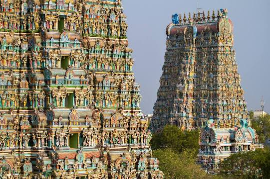
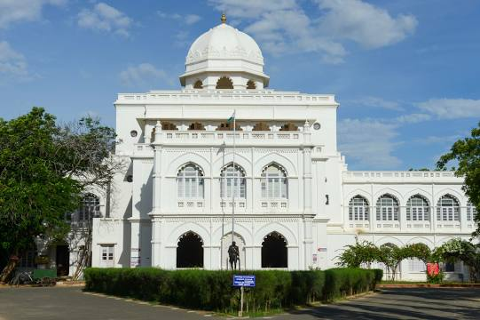

Madurai
Madurai is an energetic, ancient city on the Vaigai River in the South Indian state of Tamil Nadu. Its skyline is dominated by the 14 colorful gopurams (gateway towers) of Meenakshi Amman Temple. Covered in bright carvings of Hindu gods, the Dravidian-style temple is a major pilgrimage site. Millions attend the processions and ceremonies of April's Chithirai Festival celebrating Meenakshi and Lord Vishnu.
Meenakshi Amman Temple

Arulmigu Meenakshi Sundaraswarar Temple is a historic Hindu temple located on the southern bank of the Vaigai River in the temple city of Madurai, Tamil Nadu, India. It is dedicated to the goddess Meenakshi, a form of Parvati, and her consort, Sundareshwarar, a form of Shiva. The temple is at the center of the ancient temple city of Madurai mentioned in the Tamil Sangam literature, with the goddess temple mentioned in 6th-century-CE texts. This temple is one of the Paadal Petra Sthalams. The Paadal Petra sthalams are 275 temples of lord Shiva that are revered in the verses of Tamil Saiva Nayanars of 6th-9th century CE. The west tower of the temple is the model based on which the Tamil Nadu State Emblem is designed. The temple is a major pilgrimage destination within the Shaivism tradition, dedicated to Meenakshi Devi and Shiva. However, the temple includes Vishnu in many narratives, sculptures and rituals as he is considered to be Meenakshi's brother. This has made this temple and Madurai as the "southern Mathura", one included in Vaishnava texts.The Meenakshi temple also includes Lakshmi, flute playing Krishna, Rukmini, Brahma, Saraswati, other Vedic and Puranic deities, as well as artwork showing narratives from major Hindu texts. The large temple complex is the most prominent landmark in Madurai and attracts tens of thousands visitors a day.[22] The temple attracts over a million pilgrims and visitors during the annual 10-day Meenakshi Tirukalyanam festival, celebrated with much festivities and a ratha (chariot) procession during the Tamil month of Chittirai (overlaps with April–May in Georgian calendar, Chaitra in North India). The Temple has been adjudged best 'Swachh Iconic Place' in India as on 1 October 2017 under Swachh Bharat Abhiyan.
Thirumalai Nayakkar Palace

Thirumalai Nayak Palace is a 17th-century palace erected in 1636 CE by King Tirumala Nayaka, a king of Madurai's Nayaka dynasty who ruled Madurai from 1623 to 1659, in the city of Madurai, India. The palace is a classic fusion of Italian and Rajput styles. The building, which can be seen today, was the main palace, in which the king lived. The original palace complex was four times bigger than the present structure. In its heyday, the palace was considered to be one of the wonders of the South. Built in 1636, as a focal point of his capital at Madurai, Thirumalai Nayak intended the palace to be one of the grandest in South India. The design and architecture is a blend of Dravidian and Rajasthani styles. The Interior of the palace surpasses many of its Indian contemporaries in scale. The interior is richly decorated whilst the exterior is treated in a more austere style.
Gandhi Memorial Museum

Gandhi Memorial Museum, established in 1959, is a memorial museum for Mahatma Gandhi located in the city of Madurai in Tamil Nadu, India. Known as Gandhi Museum, it is now one of the five Gandhi Sanghralayas in the country. It includes a part of the blood-stained garment worn by Gandhi when he was assassinated by Nathuram Godse. ears after the assassination of Mahatma Gandhi, in 1948 an appeal was made to the citizens of India nationwide to build memorials for him. With the help of contributions from poor and rich citizens of India, a trust was established for this cause, the Mahatma Gandhi National Memorial Trust. This museum was inaugurated by the former Prime Minister Jawaharlal Nehru on 15 April 1959. Gandhi Memorial Museum in Madurai comes under the Peace Museums Worldwide selected by the United Nations Organisation (UNO). The palace of Rani Mangammal was renovated and converted into the museum. It is near the Madurai Collector Office.